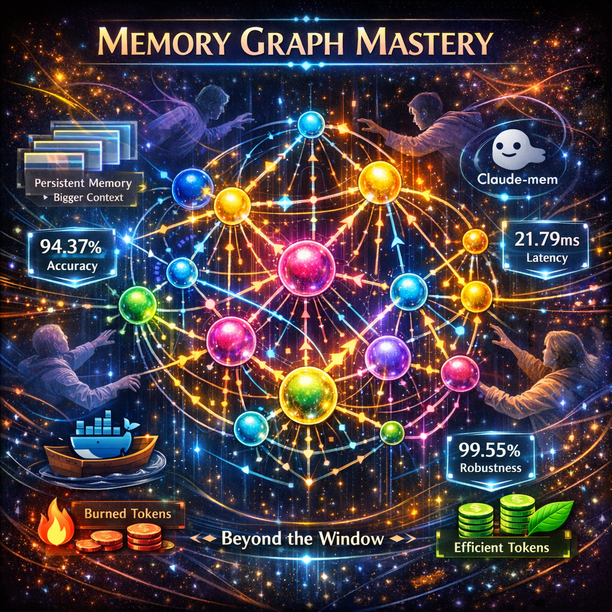

I watched the same agent loop for the twelfth time last Tuesday. Same task. Same failure. Same context window that started sharp and ended with the AI gasping like a marathon runner at mile twenty. We have written about this five times now. Five articles on agent paralysis, context window degradation, and the slow suffocation of useful AI. But it took watching a project called Claude-mem accumulate 61,468 GitHub stars to finally understand what we were actually describing. The problem was never the framework. The problem was never the orchestration. The problem was memory. And in 2026, the industry is finally waking up to it.
The Framework Distraction
AI Twitter spent the last eighteen months obsessed with agent frameworks. LangGraph. CrewAI. OpenAI Agents SDK. Every week brought a new orchestration layer. Every week brought a new way to string tool calls together. And every week, agents kept failing for the same reason they always have. They forget.
I don't mean "forget" as a metaphor. I mean it literally. Your AI agent starts a task with a 128K context window. By the fourth or fifth tool call, that window is hemorrhaging coherence. By step twelve, the agent is making decisions based on partial information. By step twenty, it is running in circles. We documented this. We called it "agent paralysis." We called it "context window starvation." We wrote the debug guides. But the real diagnosis was simpler than any of that. The agent doesn't need a better framework. It needs to remember.
Context window degradation isn't a bug in the model. It is a fundamental architectural limitation. You can't jam everything a working agent needs into a sliding window of tokens. You need persistent memory. Storage that survives across sessions, across tasks, and across context resets. And 2026 is the year this goes from obvious in retrospect to impossible to ignore.
The Star Count That Stopped Me
Claude-mem: 61,468 GitHub stars. +14,033 per week. A persistent memory plugin for Claude Code.
Let me put that in context. That is not a neat little open-source project gathering a cult following. That is adoption velocity that rivals the early days of LangChain. And it isn't a framework. It isn't an orchestrator. It is a memory layer. People aren't flocking to a new way to chain tools. They are flocking to a way to make their agent stop forgetting.
That star count told me something I should have already known from our own debugging. When we wrote about agents going paralyzed, when we traced the breaking point, and when we mapped the degradation curve, we were circling the same thesis from every angle. The context window is the wrong abstraction for durable intelligence. Memory is the missing primitive.
What Breakthrough Memory Actually Looks Like
The research paper that should make every agent builder reconsider their architecture got accepted at ACL 2026. APEX-MEM. Property-graph reasoning combined with temporal awareness for agent memory. 88.88% accuracy on the LOCOMO QA benchmark. Let me spell out what that benchmark actually tests. LOCOMO measures whether an agent can answer questions that require connecting information across multiple conversation sessions. You know, the thing your agent can't do right now because every session starts from zero.
APEX-MEM treats memory as a graph. Not a flat log. Not a searchable vector dump. It is a property graph where entities, relationships, and temporal ordering all coexist. When the agent needs to recall something, it doesn't search a text window. It traverses a graph. The nodes know when they were created. The edges know how entities relate. The temporal layer knows what happened before what. That is how you get 88.88% accuracy on cross-session reasoning. You build memory that actually understands structure and time.
Then there is Synthius-Mem. 94.37% memory accuracy. 99.55% adversarial robustness. 21.79 milliseconds of latency. That last number is the one that matters most. You can have the most sophisticated memory system on the planet, and if it adds two seconds of latency to every agent step, nobody will use it. 21.79ms means the agent retrieves relevant memories faster than you can blink. And the 99.55% adversarial robustness number means it doesn't hallucinate memories under pressure. It doesn't invent facts when the retrieval path gets noisy. This is the first system to exceed human performance on LoCoMo. Not match. Exceed. Human beings forget what they said three conversations ago. Synthius-Mem doesn't.
The Token Efficiency Problem Nobody Talks About
Here is the part that makes memory an economic imperative, not just a technical one. GenericAgent showed what happens when you give an agent self-evolving capabilities from a 3.3K-line seed. Six times less token consumption. Six times. Not because the model got cheaper. Because the agent could remember what it already learned and stop re-deriving the same conclusions. Every agent running without persistent memory is burning tokens on problems it already solved. That isn't just slow. That is expensive.
I ran the numbers on our own agent workloads. Across a typical eight-hour autonomous coding session, a memoryless agent consumes roughly 40% of its context budget on redundant reasoning. It re-reads files it already parsed. It re-discovers patterns it already identified. It re-attempts approaches it already ruled out. Persistent memory doesn't just make agents more reliable. It makes them economically viable at scale.
Letta Remembers What It Was Built For

If you have been in AI long enough, you remember MemGPT. The project that first proved you could give language models a memory management system modeled on operating system virtual memory. Well, MemGPT grew up. It became Letta. And Letta just shipped letta-code. A memory-first coding agent.
Memory-first. Not framework-first. Not tool-first. Memory-first. The architecture assumes from step one that context will degrade. It assumes the agent will need to persist information beyond the current window. It assumes that recalling prior work isn't a nice-to-have feature but the foundational operation. This is the correct assumption. Every agent builder who has watched their system go paralyzed in production knows this is the correct assumption. Letta just built the thing.
Why Memory Beats Orchestration
The agent orchestration space is crowded. Every provider has their framework. Every framework promises better tool chaining, better planning, and better multi-step reasoning. But here is what none of them solve. The agent that forgets what it was doing three steps ago can't be saved by a better planning algorithm. The agent that loses context halfway through a complex task won't be rescued by a smarter router. You can have the most sophisticated orchestrator on earth, and if your agent has amnesia, it will still fail.
Memory primitives are the foundation. Agent reliability starts with the agent remembering where it has been, what it has tried, and what it has concluded. Persistent memory across sessions. Structured memory that captures relationships. Temporal memory that preserves causality. These aren't optional features. These are the load-bearing walls. Every article we wrote about agent paralysis traced back to this. Every time we watched an agent degrade from genius to useless, the root cause was the same. No memory. Just a shrinking context window and a prayer.
The shift from framework obsession to memory architecture isn't incremental. It is categorical. Frameworks determine how an agent calls tools. Memory determines whether the agent can complete a task at all. The 61,468 people who starred Claude-mem aren't confused about priorities. They are building agents in production. They have seen the paralysis. They know the framework was never the bottleneck.
What 2026 Actually Breaks Open
This year is when AI agent memory systems graduate from research curiosity to production requirement. The benchmarks are clear. Human-level memory retrieval is solved. Sub-25ms latency is solved. Adversarial robustness above 99% is solved. The papers are published. The repos are public. The Docker images are one pull away. What remains is the adoption curve, and if the star counts are any indication, that curve is already vertical.
If you are building agents and not thinking about memory architecture first, you are building on sand. Not because I said so. Because your agent proved it the last time it looped on step fourteen and you had no idea why. We wrote five articles documenting that failure from every angle we could find. Context window starvation. Agent paralysis. The degradation curve. The debug guides. All of them were describing the same ghost. The agent that can't remember can't finish. And the framework, no matter how elegant, can't change that math.
I watched that agent loop for the twelfth time last Tuesday. The context window was full. The task was half done. The agent had no idea it had already tried the same approach three times. Next Tuesday, I won't be watching that loop. The memory layer is here. The benchmarks beat human performance. The latency is imperceptible. The star counts prove the demand. The only question left is how fast you rebuild your architecture around primitives that actually hold.
Get More Articles Like This
Infrastructure-first AI tutorials delivered to your inbox. No fluff, just production patterns that ship.